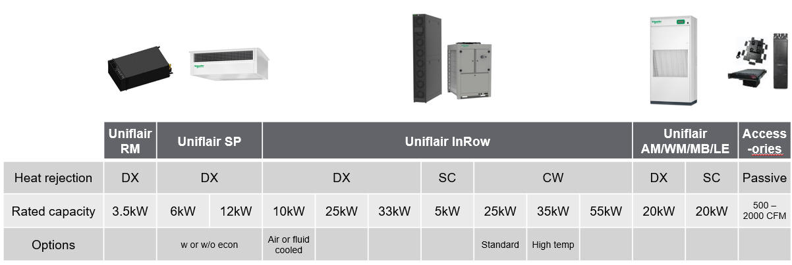

- Schneider Electric has structured the cooling business in two ways:
- Edge
- Target Segments
Naturally, since the edge is new, our mission is also to evolve
our edge cooling portfolio as the edge evolves.
- Catalog (image...)
- 
- Uniflair InRow
Close coupled cooling
No raised floor cooling
- Benefits
- Shorter air distances
- Higher rack densities
- No raised floor
- Hot Spot, Virtualization, and Supplemental
- Extreme predictability
- Applications
- Small to medium size data centers
- Edge
- High Density
- Small server room
*new or retrofit
- SKUs
Cooling capacities are rated capacities
- CW
- DX
- 10kW air/fluid cooled
- 30kW
- Powerfully compact close coupled cooling
- Benefits
- Highest cooling capacity/sqm
- Unmatched resiliency
- Highly efficient
- Applications
- Small to medium size data center
- Edge
- High Density
- Small server room
- Key Features and Specs
- 25kW rated cooling capacity (ASHRAE 127)
- 5,440 m3/h rated airflow
- Up to 30kW max capacity
- Emergency airflow - 6,800 m3/h
- Only 1.0 m2 outdoor footprint
- 3.2 SCOP energy efficiency (ASHRAE 127)
- Humidification (Q1-2020)
- Reheat (Q1-2020)
- Electronic Expansion Valve
- Oil separator
- 120m max equiv distance
- 30m max lift (outdoor unit above indoor)
- Condensing unit design
- Power by UPS
- -40 degree winter kit (Q1-2020)
- 7kW min load (Q1-2020)
- VFD brushless scroll compressor
- Dual power circuits (option)
- Top or bottom connections
- Soft start
- Group up to 20 units
- Heat assist
- Coil guard
- 600mm 33kW
- SC
- Higher efficiency, less floorspace, better predictability
- Positioning
- Credentials
- What’s Inside?
- Common Key Features
- Indoor
- Color Touchscreen (new models)
- Remote temperature
probe(s)
- Condensate management system
- Casters
- 3 way
valve (CW) or expansion valve (DX)
- High sensible cooling
coil
- Easy access electrical box
- Compliance
- Eurovent
- UL
- CE
- CCC
- CMIM
- RCM
- Configurators
- Humidity monitoring (optional)
- Top/bottom
power and piping connections
- Variable speed fans
- TLS 1.x
Security
- Modbus TCP/IP
- BACnet
- Group up to 20 units
- Active Flow Control (AFC) compatible
- Industry leading
warranty
- EcoStruxure™ ready
- No baffles / side air
discharge necessary
- Rope leak detection (optional)
- Std
and high efficiency filtration
- EcoAisle and RACS
compatibility
- DX (The compressor, VFD, and oil separator are located
either in the InRow unit or outside in the condensing unit
depending on which model)
- Variable capacity compressor
- R410A refrigerant (DX)
- Compressor sound jacket (DX)
- -40
degree winter kit (DX)
- Lead/lag (DX)
- Condenser fan and coil
- Electrical panel
- Oil separator (new models)
- Power and piping
connections
- Uniflair RM
- "Rack-mounted cooling" (image)
- The easiest way to integrate cooling into your micro
data center.
- Benefits
- Cooling for single rack
- Room independent
- Designed for mission critical
- Constant temperature inside rack
- Applications
- MicroDC
- Industrial Edge
- Commercial Edge
- Telco Edge
- Small Server Room*
- Network Closets*
* new or retrofit
- SKUs
- Key Features and Specs
- 3.5kW rated cooling capacity (ASHRAE 127)
- 750 m3/h rated airflow
- Up to 4kW max capacity
- Stacking (ETL only)
- Small outdoor footprint
- Energy efficient
- 20m max equiv distance
- +/-5m max lift
- Condensing unit design
- -40 degree winter kit (optional)
- <1kW min load Inverter compressor
- Upward air plenum
- Top or bottom connections
- Soft start
- Coil guard
- Condensate pump (optional)
- User Interface (optional)
- BMS
- Network card (roadmap)
- Installation (piping) kits
- Uniflair SP
- "Ceiling mounted cooling" (image)
- Zero floorspace edge cooling
- Benefits
- Flexible zero floorspace
- Direct air economization
- Mission critical
- Applications
- Commercial Edge
- Telco Edge
- Small Server Room
- Network Closets
- SKUs
- 6kW
- 12kW
* w/ or w/o direct air econ option
- Key Features and Specs
- 6 or 12 kW options
- 50 or 60Hz
- Inverter compressor
- Small outdoor footprint
- Condensing unit
- Soft start
- Uniflair Room
- Credentials
- What sets Schneider Electric apart?
- EcoStruxure™ native*
- Global availability**
- TLS cybersecurity
- BMS / network card
- Active Flow Control® and EcoAisle®
- 24/7 mission critical operation
- Stocking of all models**
- Condensing unit (outdoor compressor, DX)
- Service and spare parts
- Active response controls
- High sensible cooling w/ condensate mgmt
- Variable speed*
- Filtration
* larger products
** smaller products only
- Active response controls
- Data Center